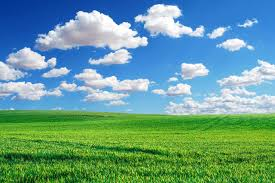

Exploring the Beatuy of Nature

The absence of a deep emotional connection between humans and the natural world is at the root of the environmental crisis.Can you think of a place in nature that you know really well?Close your eyes for a moment and see what comes up.Can you visualise the place in exquisite detail? The sounds, the colours, the smells, the subtleties that only you know.
Exploring the Beatuy of Sky

The scattering caused by these tiny air molecules (known as Rayleigh scattering) increases as the wavelength of light decreases. Violet and blue light have the shortest wavelengths and red light has the longest. Therefore, blue light is scattered more than red light and the sky appears blue during the day.
Exploring the Beatuy of Ocean

Ocean is a huge body of salt water. Oceans cover nearly 71 percent of Earth's surface. They contain almost 98 percent of all the water on Earth. There is one world ocean, but it is divided into five main areas: the Pacific, the Atlantic, the Indian, the Arctic, and the Southern, or Antarctic.